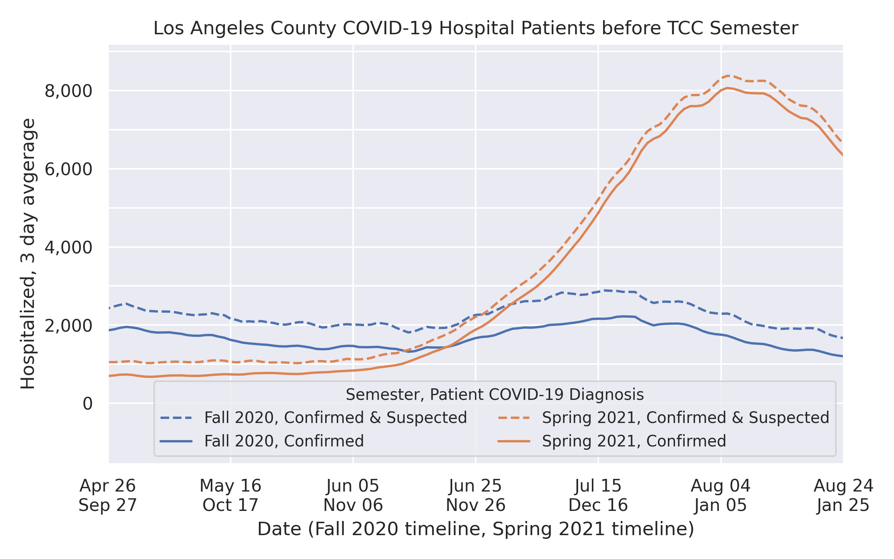
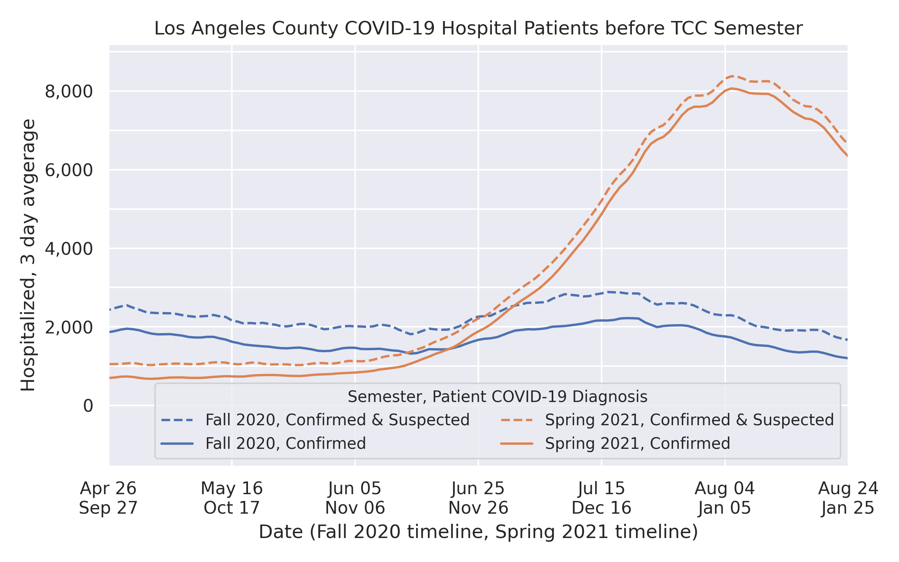

California Department of Public Health has set forward a plan for safely reopening based on new cases per capita and testing positivity rate. There are four tiers that represent varying levels of community transmission. More parts of the economy may open as community transmission drops. The four tiers are: widespread, substantial, moderate, and minimal.
Los Angeles County has consistently reached the test positivity metric. The county tests more per capita than the state average, so the new cases per capita metric is relaxed.
 
